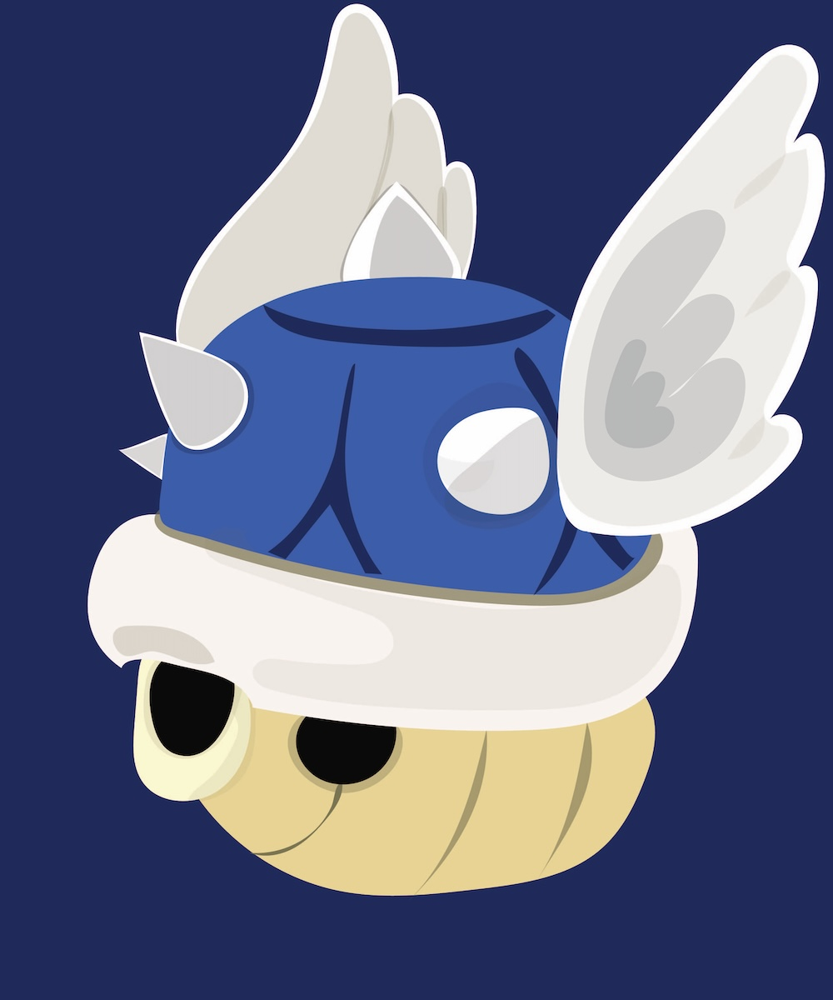

Mario Kart Blue Shell
Mario Kart Blue Shell: Reimagining the Icon (2024) presents a reimagined version of the blue shell, an iconic item from the Mario Kart video game series, created using Illustrator. By reinterpreting this familiar object through modern graphic design, I explored the tension between playful nostalgia and contemporary visual culture. This piece reflects the theme of Creative Juxtapositions, as it blends a childhood video game element with bold, modern illustration, highlighting how old symbols can be recontextualized to convey new meaning. The juxtaposition of a simple game item with refined design challenges expectations and invites the viewer to reconsider familiar icons.

Mario Kart Blue Shell Illustration
Next: Graphic Design & Print Media